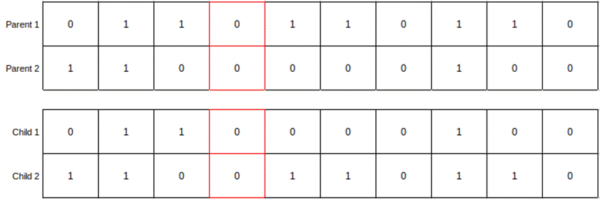
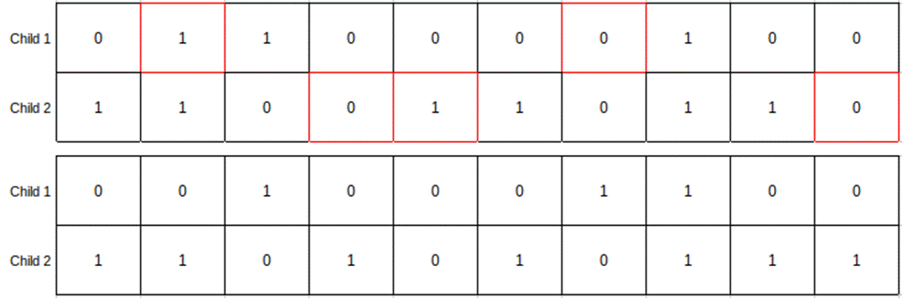
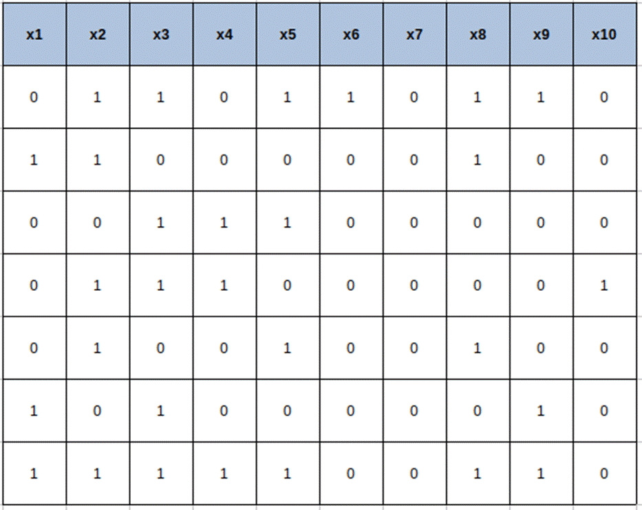
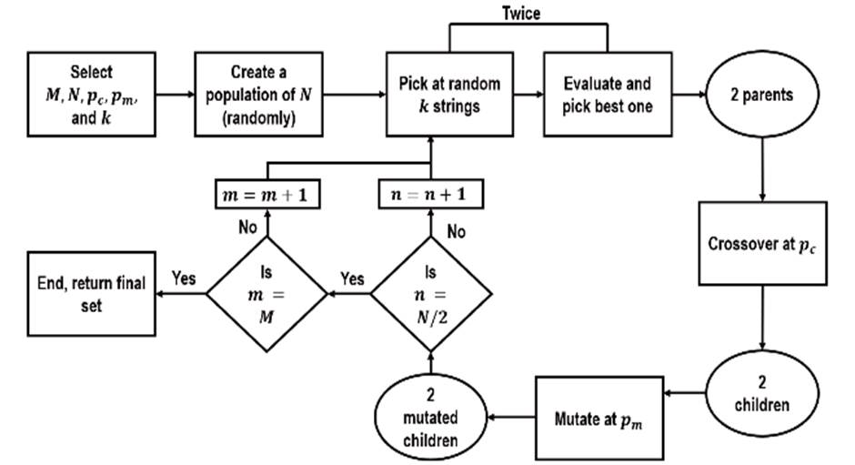

8.2: Genetic Algorithm
The genetic algorithm technique is an optimization
technique. It is a population-based metaheuristics search algorithm, inspired
by the natural phenomenon of evolution. Parents produce offspring, who inherit
the strengths and abilities of both parents in the form of genes. This happens
through a process called crossover. In the genetic algorithm, the crossover is
carried out at one or more random cut-off points and the gene is swapped from
both parents based on crossover probability. Figure 8.2.1 below illustrates the
process of crossover. The cut-off point for the genes is kept in the 4th column
for the parents and highlighted in red. Genes are swapped at the cut-off points
and child 1 and child 2 have the swapped genes. Genes from the beginning until
the cut-off point are the same as parents. From the 5th point onwards, genes
are obtained from the other parents.

Figure 8.2.1: Crossover in genetic
algorithm
There is also a likelihood of genetic
mutation when a gene is passed from parents to offspring. In the case of the
genetic algorithm, a mutation is introduced in the form of new patterns to
randomly refresh the population. This encourages the search for unexplored
feature combinations. A small probability (1% 2%) is selected for each possible
feature as mutation probability. A random number is generated. If the random
number is less than the mutation probability, then the feature is mutated and
its status is changed. If it was originally supposed to be included, it is
excluded and vice versa. Figure 8.2.2 explains the mutation process in the
genetic algorithm.
Cells highlighted in red were mutated and
values were changed. If the original value was 1, it was changed to 0, and vice
versa.

Figure 8.2.2: Mutation in genetic
algorithm
An initial set of solutions are
created, called population. Each solution in the population is called a
chromosome . Each chromosome has a length equal to the total number of
features. Individual features are represented as binary 0/1. 0 stands for a
specific feature being removed from feature space and 1 stand for the feature
being included. As explained previously, through the process of crossover, a
list of the best chromosomes is selected and passed through mutation. This
process is repeated several times, based on how many generations are defined by
the user. Imagine there are 10 features x1 to x10 and we want to try 7
solutions at a time. i.e., a population of 7. Figure 8.2.3 illustrates what the
initial solution will look like for 10 features and a population of 7. Each row
will be a chromosome and all chromosomes combined will be called population.
Figure 8.2.4 illustrates the genetic algorithm flowchart.

Figure 8.2.3: Solution matrix for 10
features and population of 7

Fig 8.2.4: Genetic algorithm flowchart
M:
Number of generations
N:
Population size
pc: Probability of crossover
pm: Probability of mutation
k:
Number of contestants
Number of generations, population
size, crossover, and mutation probability are some of the hyperparameters of
genetic algorithm.
This method tries to find the best
possible feature combination by searching in a computationally efficient
manner. This also means it does not search for all possible combinations. As a
result, the best-performing features obtained from the genetic algorithm might
not be the best combination of features. If the number of features are small,
the genetic algorithm can be a really useful method. However, for high
dimensional data in which the number of features is numerous, the genetic
algorithm might not be computationally efficient, and the resultant features
obtained from the genetic algorithm might not be useful either.
We have earlier initialized a
feature selection object in this chapter as fsObj = FeatureSelection. We can use
the object fsObj for performing the genetic
algorithm by using the GeneticAlgorithm function in the object fsObj. Below is how the syntax will look like.
best_columns = fsObj.GeneticAlgorithm(generations=20, population=75, run_time=1200)
In this syntax example, we have used
20 generations and 75 population for the genetic algorithm. We will execute
genetic algorithm feature selection for 1200 minutes, i.e., 20 hours and will
stop the execution after that.